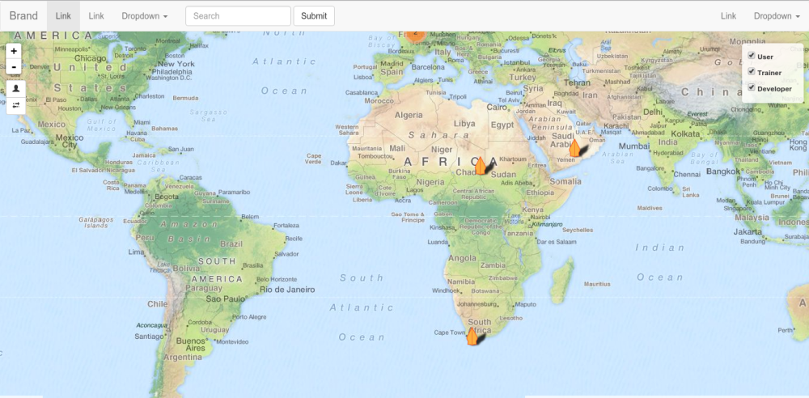

Releasing Django User Map v1.0.0
Wohoo, finally I just released Django User Map v.1.0.0 after some work since 2 or 3 weeks ago! Click documentation to read the docs.
What have been changed from the previous one?
Removing Custom User Model
A bit of history, at first Tim Sutton and I created the Flask version here. It was a simple flask app with only sqlite to save users. For the online version of it, Python Indonesia is using this project here Python Indonesia User Map. As we needed some more features and wanted to make InaSAFE Realtime more like a web app, we created django project for all InaSAFE web related project. So the first thing I did was to re-implement the User Map with Django.
We wanted to still keep the users from the Flask User Map and migrate them to the new Django one. The Flask User Map is using an email for user to register themselves. That's why I created a custom user model with its own authentication backend. Actually in the end, we didn't migrate the users and only e-mail the old users to register on the new site :) There were other fields (InaSAFE, OSM roles, password) that weren't available from the previous one. So, instead of migrating them with a lot of default values, we decided to just mass email them.
But, the custom user model has made this apps not reusable for others to plug the apps on their existing django projects. So, after some thoughts, I decided to get rid of that and make Django User Map extend the auth user model defined for the project. This is making Django User Map really simple now as it doesn't care what the user model looks like, or how the authentication backend works. As the users need to log in before adding/updating themselves on the user map, the only thing I need to know is the login view of the project. This must be defined in the user map setting. Read here Login View
Using REST API
I was just thinking that this resource could be useful for others to use. Right now GET is the only operation allowed, returning geojson of the users.
New marker filter control
Users can select multiple roles for themselves. Therefore, I couldn't cheat filtering user based on roles using Leaflet overlay control. So, I made a custom filter control for that.
Make settings more compliant with Leaflet
For the basemap and marker icon, users (I meant, who plug Django User Map on their Django project), can pass options using the exact same L.tiles and L.icon options. You can just pass any valid options of them in the setting. Read here for marker and here for basemap
Allow users to override data privacy content and add navigation menu
This is made possible through the Django template loading mechanism. You can override the data privacy content (read here) or add navigation menu (read here)
See below how Django User map looks like when we add navigation menu:

For the navigation, unfortunately I am not quite satisfied with it. There are some matters that I was not quite sure. One of them is whether to have the base template of User Map extend the base template of the django project or not. With this option, there are a lot of other variables unknown, such as the name of the blocks to put User Map components.
So what I did right now is to use include. So the navigation defined in project's template will be included to the template in user map. As the user map uses Bootstrap 3, users can just use style classes or other component from Bootstrap 3. This is also a drawback for example when users already have their own template for navigation menu, and they use Bootstrap 2. This is the problem I found when I tried to plug Django User Map in to QGIS Django. I tried using scoped styling, but it apparently does not work for all browsers. And it was actually hard to use Bootstrap 3 and make it look like as if it uses Boostrap 2. So, users who have this problem perhaps could just not use the navigation menu. Drop me some comments if you have suggestion!
Made popup content dynamically generated
Basically what you defined on the setting for api_user_field will be shown on the popup content and on the API. You pick what you want to show yourself!
Some other stuffs
Small stuffs but taking quite an effort, like:
- Utilising class based views. The first time I worked back on the code, I was embarassed by myself reading my own code :)
- Having a nice documentation: This is a cool docs
- Rendering popup content in client side using jsRender. Yeah users nowadays have abundant resources of their computers. So why should we render for them on the server side? :)
What is the next plan?
I want to let users who don't use spatial backend on their django project to be able to plug this apps as well. I need to look first at some options like django-geojson.
So, if you have Django project, try to plug this Django User Map, and let me know if you have some problems or patches! #ShamelessPlug